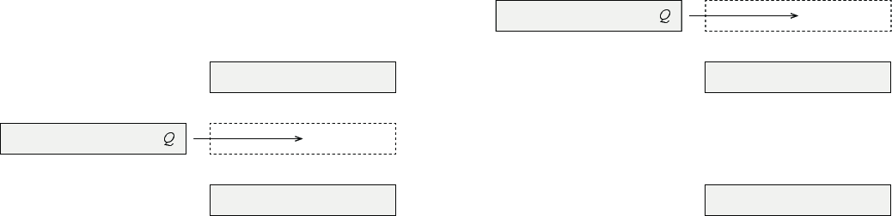
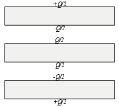
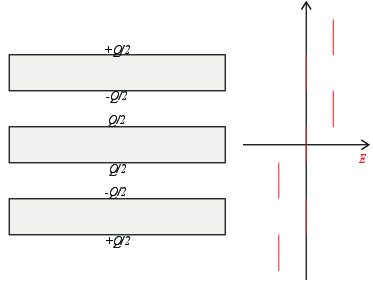

I figuren til venstre plasseres en ledende plate med ladning \( +Q \) mellom to nøytrale ledende plater.
a) Skisser ladningsfordelingen på alle platene når platen er plassert mellom de to andre platene som vist i figuren.
Vær sikker på at du har sjekket alle varianter før du kikker på svaret!
Er du helt sikker på at feltet er null inne i alle lederne og at lederne har den ladningen de er oppgitt å ha?

b) Skisser det elektriske feltet i retningen normalt på platene.

(Denne oppgaven er ganske lik den forrige. Du kan godt gå videre hvis du har liten tid) I figuren til høyre plasseres en ledende plate med ladning \( +Q \) over to nøytrale ledende plater.
c) Skisser ladningsfordelingen på alle platene etter at platen er plassert.
d) Skisser det elektriske feltet i retningen normalt på platene.